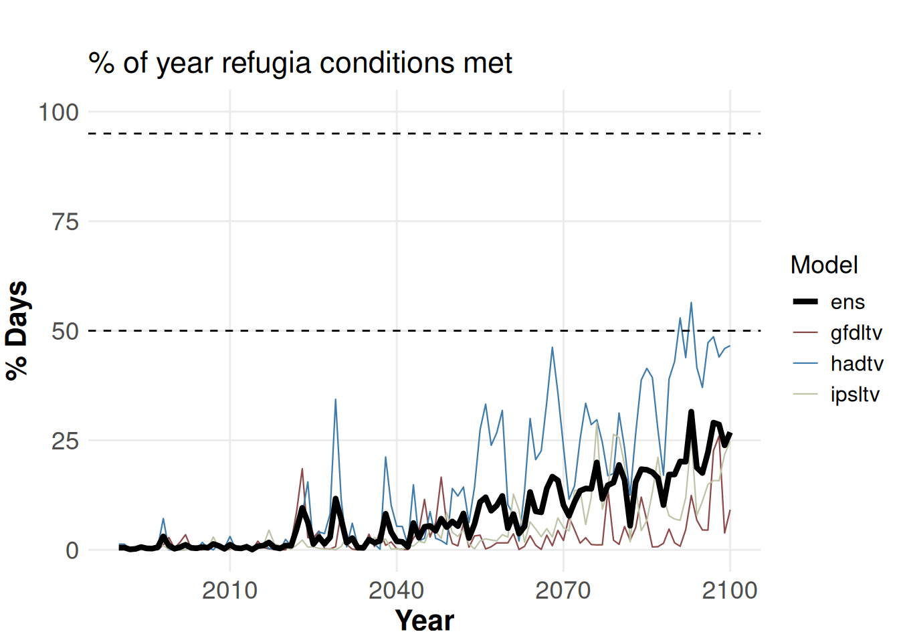
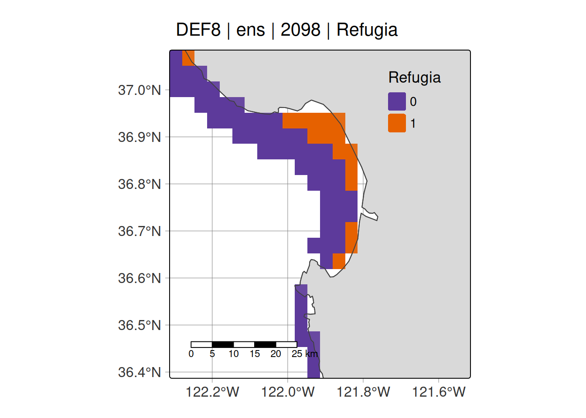
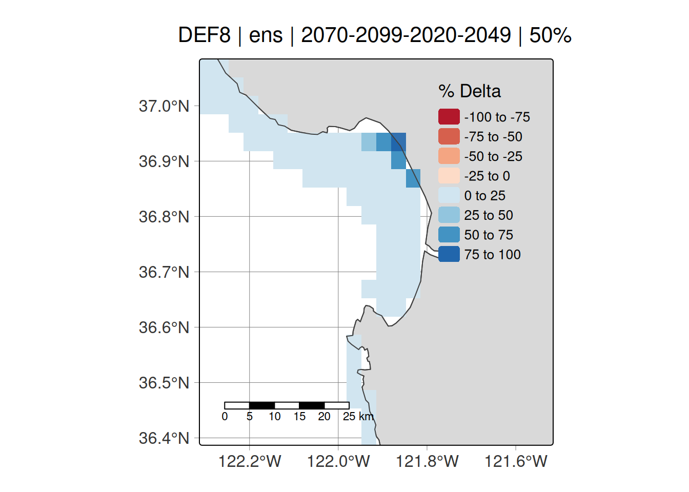

Here I will document examples of how to run refugia functions. More to come.
Data required
Refugia dataframe
All examples require a dataframe of annual refugia. The examples herein use a precomputed refugia dataset contained internally within the package, which you can access via abalone::percentdays. This represents a dataframe of refugia for each year across the three ESMs, for definition 8: temperature growth.
-
cellID= cell number corresponding to the cell index position fromabalone::cali_rastwhich is a raster of California coastal cells taken from UCSC-ROMS 3 km, but only containing grid cells above 100m depth. -
refugiadays= Number of days where refugia conditions are met for the corresponding cellID-year-model combination -
percent= As above, but for percent of year -
year= Year of interest -
model= Earth System Model
tail(abalone::percentdays)
#> cellID refugiadays percent year model
#> 697519 81489 65 17.808219 2100 hadtv
#> 697520 81490 182 49.863014 2100 hadtv
#> 697521 81491 268 73.424658 2100 hadtv
#> 697522 81775 33 9.041096 2100 hadtv
#> 697523 81776 113 30.958904 2100 hadtv
#> 697524 81777 225 61.643836 2100 hadtv
str(abalone::percentdays)
#> 'data.frame': 697524 obs. of 5 variables:
#> $ cellID : num 49 50 51 52 53 54 335 336 337 338 ...
#> $ refugiadays: num 0 0 0 0 0 0 0 0 0 0 ...
#> $ percent : num 0 0 0 0 0 0 0 0 0 0 ...
#> $ year : num 1990 1990 1990 1990 1990 1990 1990 1990 1990 1990 ...
#> $ model : chr "ens" "ens" "ens" "ens" ...
unique(abalone::percentdays$model)
#> [1] "ens" "gfdltv" "ipsltv" "hadtv"
range(abalone::percentdays$year)
#> [1] 1990 2100Case study lat/lon extents
We provide extents of our case study regions via extent_list
extent_list
#> $monterey_bay
#> xmin xmax ymin ymax
#> -122.3 -121.5 36.4 37.1
#>
#> $fort_bragg
#> xmin xmax ymin ymax
#> -124.3 -123.5 39.1 39.7
#>
#> $channel_islands
#> xmin xmax ymin ymax
#> -120.50 -119.40 33.80 34.15
#>
#> $san_francisco
#> xmin xmax ymin ymax
#> -123.5 -121.9 37.3 38.5Shapefiles
We provide five shapefiles to aid in mapping via the read_shp function. Datasets and further info can be found in the helpfile
1. Stress
Build rasters of annual ‘stress’
First, we use build_stress to create rasters of annual stress. This is defined as the percentage of each year that abalone experience stress, based on the refugia definition chosen.
This produces a terra::rast() object of stress for each grid cell for the state of California. The user can specify to save the output to a local directory via the save_path argument - leaving it as NULL will not save the file.
ens_stress <- build_stress(percentdays = abalone::percentdays,
esm = "ens",
yrst = 1990,
yrend = 2100,
progress = FALSE,
save_path = NULL)
ens_stress
#> class : SpatRaster
#> size : 286, 286, 111 (nrow, ncol, nlyr)
#> resolution : 0.03321678, 0.03323263 (x, y)
#> extent : -126, -116.5, 32.49849, 42.00302 (xmin, xmax, ymin, ymax)
#> coord. ref. : lon/lat WGS 84 (EPSG:4326)
#> source(s) : memory
#> varnames : emptyrast_100
#> emptyrast_100
#> emptyrast_100
#> ...
#> names : 1990, 1991, 1992, 1993, 1994, 1995, ...
#> min values : 0.00000, 0.00000, 0.00000, 0.00000, 0.0000, 0.00000, ...
#> max values : 45.20548, 48.49315, 55.19126, 52.05479, 46.0274, 59.72603, ...Above, the resolution is 3km, extent is for California, and the file has 111 layers, corresponding to 111 years between the user-specified year range in the function call.
Now, we can vizualise what one layer of the raster looks like.
terra::plot(ens_stress[[1]], main = "% Stress in 1990")Vizualise annual stress using tmap
Now we can use viz_stress to create a tmap map of a particular location of interest. Let’s have a look at projected stress for Monterey Bay and Fort Bragg in 2098, ensembled across all ESMs.
stress_ci <- viz_stress(yr = 2098,
esm = "ens",
area = "monterey_bay",
def = "def8",
extent_list = abalone::extent_list,
infile = abalone::percentdays)
stress_ciPlot annual time series of refugia
Now we can vizualise the % of each year that meet refugia conditions. Note this takes ~5 seconds for Jessie to run.
ts_viz_percentdays(area = "monterey_bay",
yr_range = 1990:2100,
def = "def8",
input_file = abalone::percentdays,
cons_thresh = 95,
lib_thresh = 50)
2. Refugia
Build rasters of binary refugia
Now that we have rasters of stress, we can convert these into binary rasters of refugia using the build_refugia function. We have a new argument for thresh, representing the temporal threshold we use to define refugia. The two options we provide are either 50 or 95%, representing liberal and conservative thresholds for defining refugia for the year of interest.
ens_refugia <- build_refugia(percentdays = abalone::percentdays,
esm = "ens",
yrst = 1990,
yrend = 2100,
persist_thresh = 50,
progress = FALSE,
save_path = NULL)
terra::plot(ens_refugia[[98]], main = "Refugia in 2088")Vizualise binary refugia
And as before, we can vizulise our refugia rasters using viz_refugia:
viz_refugia(yr = 2098,
esm = "ens",
area = "monterey_bay",
def = "def8",
extent_list = abalone::extent_list,
infile = abalone::percentdays,
persist_thresh = 50)
Plot annual time series of refugia (temporal threshold)
Here, we can see the proportion of each year refugia conditions were met, averaged across all cells within the area of interest. This is dependent on the temporal threshold used. Takes a few seconds to run.
ts_viz_refugia(area = "monterey_bay",
yr_range = 1990:2100,
def = "def8",
input_file = abalone::percentdays,
persist_thresh = 50,
extent_list = abalone::extent_list)3. Persistence
Build rasters of persistence of refugia
Now that we have our binary refugia maps, we want to calculate the persistence of refugia over a predefined time period. Here, we can create a raster of persistence for 2070-2099, which tells us the % of time during this time period that each cell was classed as refugia, dependent on the temporal threshold used.
persist_refugia <- build_persist(esm = "ens",
yr_range = 2070:2099,
persist_thresh = 50,
save_path = NULL)
terra::plot(persist_refugia)Vizualise persistence
As before, we can use tmap to create a nicer plot.
viz_persist(yr = 2070:2099,
esm = "ens",
area = "monterey_bay",
def = "def8",
extent_list = abalone::extent_list,
breaks = seq(0, 100, 20),
persist_thresh = 50)4. Delta
Build rasters of delta refugia
We’re interested in how refugia has changed over time. The function build_delta creates a raster in delta refugia (i.e., the change in refugia) between two time periods. Positive values = gain in refugia; negative values = loss of refugia.
deltar <- build_delta(persist_thresh = 50,
esm = "ens",
hist_range = 2020:2049,
proj_range = 2070:2099,
save_path = NULL)
terra::plot(deltar)Vizualise delta
Let’s use tmap.
viz_delta(esm = "ens",
area = "monterey_bay",
def = "def8",
hist_range = 2020:2049,
proj_range = 2070:2099,
extent_list = abalone::extent_list,
persist_thresh = 50,
save_path = NULL)